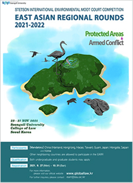

About EARR
-
2021-2022 주제: 보호구역과 무력 분쟁
 2021년 제10회 스텟슨 국제환경모의재판 동아시아 경연대회에서는 “보호 습지에서의 무력갈등”에 관련한 법적 분쟁을 다룹니다.
카리브해의 카레타 섬에 위치한 안후르 연방과 롱고 공화국은 인접 주권 국가입니다. 카레타는 1500년대 초부터 1898년까지 식민 통치의 대상이었으며 이때 안후르와 롱고로 나눠졌습니다. 카레타의 남쪽에 위치한 작은 섬 켐프 키는 롱고의 문화와 언어를 사용함에도 불구하고 이때 안후르로 배속되었습니다. 1985년 카레타 국가 연합의 해산 이후 안후르와 롱고는 조약을 통해 국경선을 유지하였습니다. 1986년 람사르 협약에 가입하면서 롱고는 자국의 멘히트 복합 습지를 국제 보호 습지 (람사르 사이트)와 국립공원으로 지정하였습니다. 멘히트 복합 습지는 안후르와 접경한 카레타 북부에 위치해 있습니다. 1897년 안후르 또한 람사르 협약에 가입하면서 켐프 키에 위치한 스쿠트 연안 습지를 람사르 사이트로 지정하였습니다.
스쿠트 연안 습지는 멸종 위기에 처한 바다거북 로열 리들리의 보금자리입니다. 2019년 안후르의 국회의원 선거 이후 ANP-FF라는 무장단체가 국경을 넘어 롱고의 멘히트 습지에 캠프를 설치하였습니다. 2019년 11월 ANP-FF는 안후르 영토를 공격하였고 이에 대한 반격으로 안후르는 이들의 캠프에 비무장 드론을 동원해 폭탄을 발사하였습니다. 그 결과로 멘히트 복합 습지가 파괴되었습니다. 롱고는 안후르의 행위를 규탄하며 배상을 요구할 권리를 유보하였습니다. 안후르와 롱고는 수차례 외교문서를 나누며 분쟁을 해결하기 위해 노력하였으나 실패하였습니다. 이에 따라 양국 간 긴장이 고조되면서 롱고안 족의 안전을 우려하는 소셜미디어 캠페인이 켐프 키에서 시작되었습니다. 롱고는 롱고안 족의 보호를 위해 켐프 키에 군대를 파견하였고 안후르는 롱고의 국제법 위반과 주권 침해라고 항의하였습니다. 롱고는 이를 부인하며 켐프 키에서 국민투표를 실시하였고 유권자의 96%가 켐프 키의 롱고 배속에 찬성하였습니다. 그러나 안후르는 국민투표를 롱고 군대의 부당한 영향력을 통한 사기라고 규정하며 켐프 키를 공식적으로 점령지로 선언하였습니다. 그러나 국제연합의 9개 회원국은 켐프 키를 롱고의 영토로 인정하였습니다. 2020년 9월 27일 롱고 환경지속가능개발부는 스쿠트 해안 습지 내에 호텔 단지를 조성할 것을 발표하였습니다. 이에 대해 안후르 정부는 호텔 단지 조성은 국제법 위반이라고 주장하였습니다. 이에 따라 2020년 10월 4일 안후르는 람사르 사무국에 람사르 자문단을 조직할 것을 요청하였으나 어떠한 조치도 취해지지 않았습니다. 결국 안후르와 롱고는 협상을 통해 위 문제들을 국제사법재판소에 제출하기로 합의하였으며 롱고는 재판소의 판단 전까지 호텔 건설을 허용하지 않기로 합의하였습니다.
The topic of the EARR 2021 is questions concerning “Protected Areas and Armed Conflict.” The Federal States of Anhur and Republic of Rongo are neighboring sovereign states located continent of Caretta. Caretta was divided into two administrative units, Anhur and Rongo during its colonial period. Also, Kemp Key was assigned to be part of Anhur. In 1986, Rongo designated the Menhit Wetland Complex in Rongo as a Wetland of International Importance (Ramsar Site) and as a national park. In 1987, Anhur designated one Ramsar Site, the Scute Coastal Wetland, which is located on Kemp Key. The area is an important nesting site for sea turtles, especially the critically endangered Royal ridley (Lepidochelys royalis). After national parliamentary elections in Anhur in 2019, Anhuri New Party Freedom Fighters (ANP-FF) crossed the border into Rongo and set up camp in the Menhit Wetland Complex. In early November 2019, the ANP-FF launched attacks and it killed several Anhuri citizens and damaged buildings. On 6 November 2019, Anhur employed unarmed drones to locate the ANP-FF’s camp. Anhur’s artillery rounds sparked a fire that, because of the drought conditions, destroyed Menhit Wetland Complex. The Government of Rongo strongly condemned the military action and reserved the right to demand compensation. Anhur and Rongo tried to settle their dispute, but it was not and tensions between the two countries escalated. A social media campaign (#FreeKempKey) was started in Rongo and expressed concern about the safety of ethnic Rongoans in Kemp Key. So, the Government of Rongo dispatched military units to Kemp Key to protect Rongoans. On 25 May 2020, Rongo organized a referendum for all eligible voters on Kemp Key. Voters were asked whether they wanted Kemp Key to be a province of Rongo or Anhur. 96 percent of voters voted in favor of Kemp Key being a province of Rongo. The Government of Anhur characterized the referendum as a “sham, with undue influence by the Rongoan military. On 27 September 2020, the Rongoan Ministry of Environment and Sustainable Development announced that it was granting a permit to build a hotel complex within the Scute Coastal Wetland on Kemp Key. The Government of Anhur alleged that the planned project clearly would violate international law. On 4 October 2020, Anhur requested the Secretariat to organize a Ramsar Advisory Mission, no action has been taken on this request. Negotiations between Anhur and Rongo were facilitated by the Government of Switzerland, to which Anhur and Rongo express their deep appreciation. As a result of the negotiations, Anhur and Rongo agreed to submit certain questions to the International Court of Justice (ICJ). Rongo has agreed not to allow construction of the hotel until the ICJ issues its judgment.